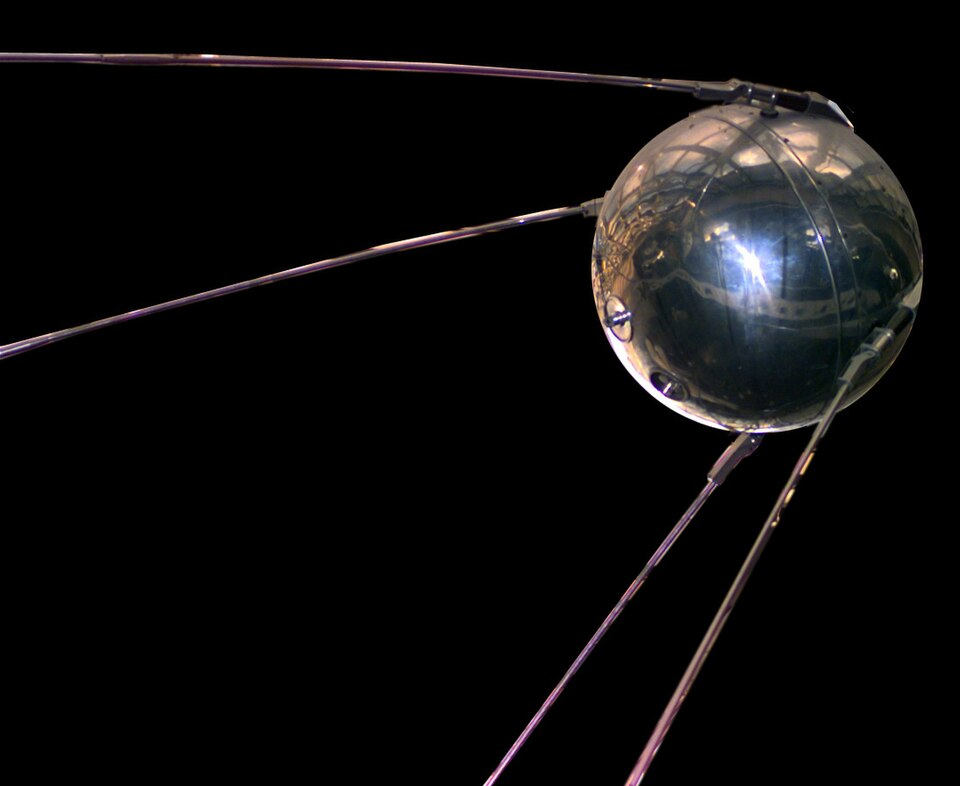
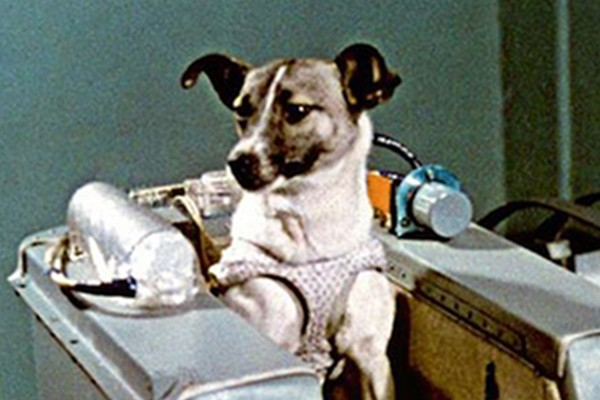
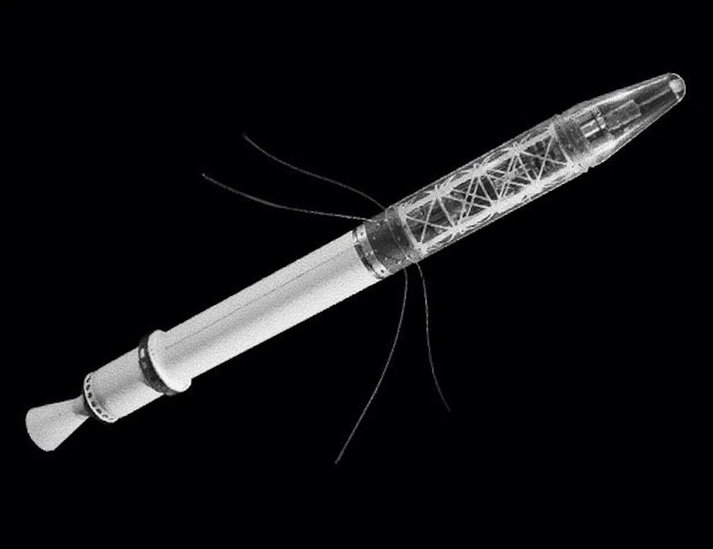
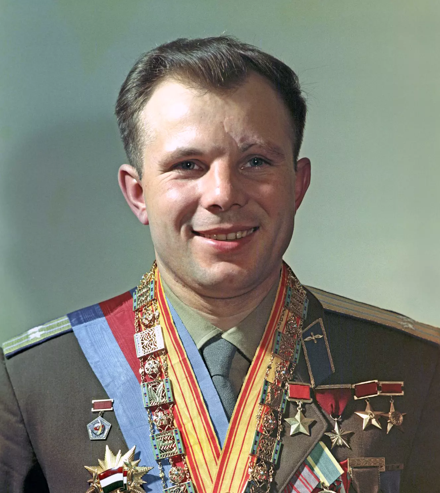
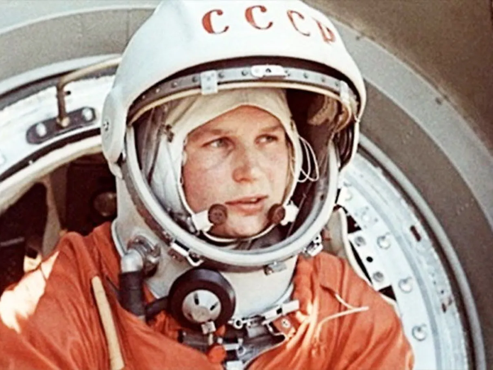
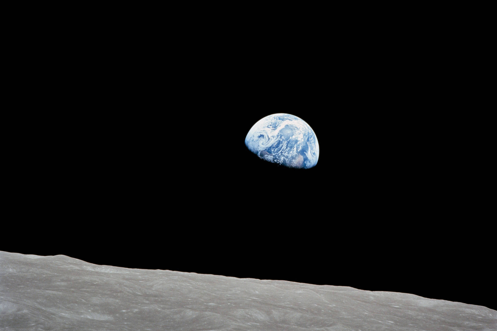
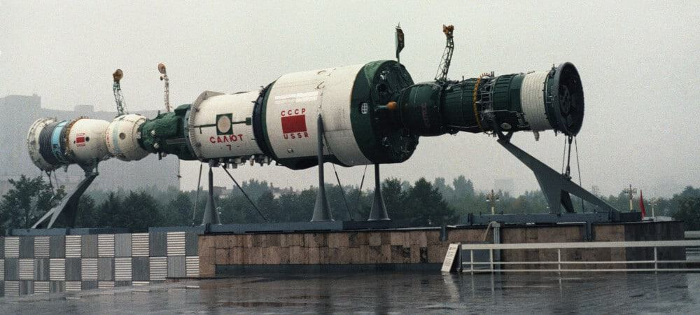
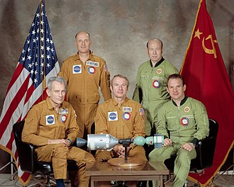

Linha do Tempo Interativa
Explore os principais marcos da corrida espacial clicando nos eventos abaixo
Sputnik 1 - Primeiro Satélite Artificial
A União Soviética lança o primeiro satélite artificial da história, marcando o início da Era Espacial e surpreendendo o mundo.
Sputnik 2 - Laika, a Primeira Vida no Espaço
A cadela Laika se torna o primeiro ser vivo a orbitar a Terra, provando que organismos vivos podem sobreviver no espaço.
Explorer 1 - Primeira Resposta Americana
Os Estados Unidos lançam seu primeiro satélite, descobrindo os cinturões de radiação de Van Allen ao redor da Terra.
Yuri Gagarin - Primeiro Homem no Espaço
Yuri Gagarin completa uma órbita completa ao redor da Terra na nave Vostok 1, tornando-se o primeiro ser humano no espaço.
Alan Shepard - Primeiro Americano no Espaço

Alan Shepard realiza um voo suborbital de 15 minutos, tornando-se o primeiro americano no espaço.
Valentina Tereshkova - Primeira Mulher no Espaço
Valentina Tereshkova se torna a primeira mulher a viajar para o espaço, completando 48 órbitas em 71 horas.
Alexei Leonov - Primeira Caminhada Espacial

Alexei Leonov realiza a primeira atividade extraveicular da história, permanecendo fora da nave por 12 minutos.
Apollo 8 - Primeira Órbita Lunar Tripulada
A Apollo 8 se torna a primeira missão tripulada a deixar a órbita terrestre e orbitar a Lua, capturando a icônica foto "Earthrise".
Apollo 11 - Primeiro Homem na Lua

Neil Armstrong e Buzz Aldrin se tornam os primeiros humanos a pisar na Lua, cumprindo a promessa de Kennedy.
Salyut 1 - Primeira Estação Espacial
A URSS lança a primeira estação espacial da história, iniciando a era da presença humana permanente no espaço.
Projeto Apollo-Soyuz - Fim da Corrida Espacial
Astronautas americanos e cosmonautas soviéticos se encontram no espaço, simbolizando o fim da corrida espacial e o início da cooperação.